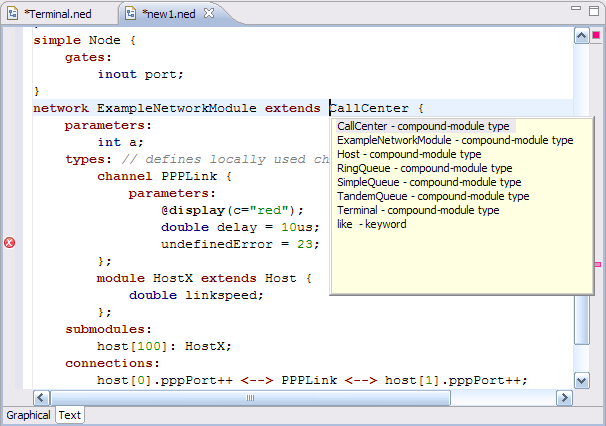
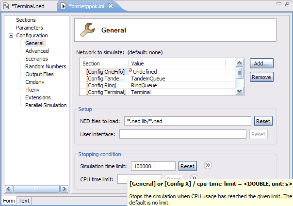
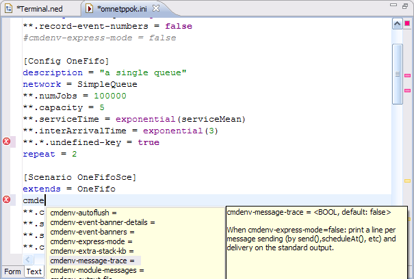
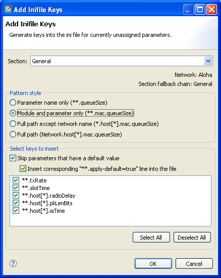
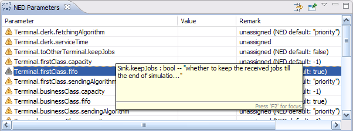
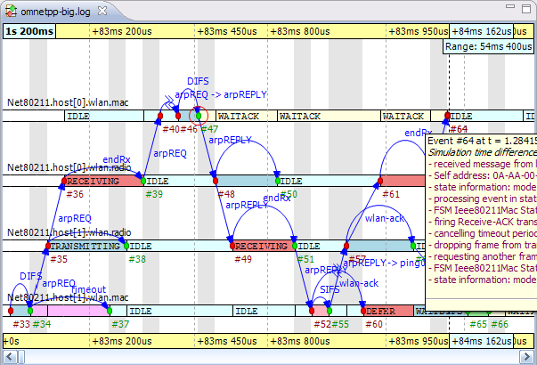
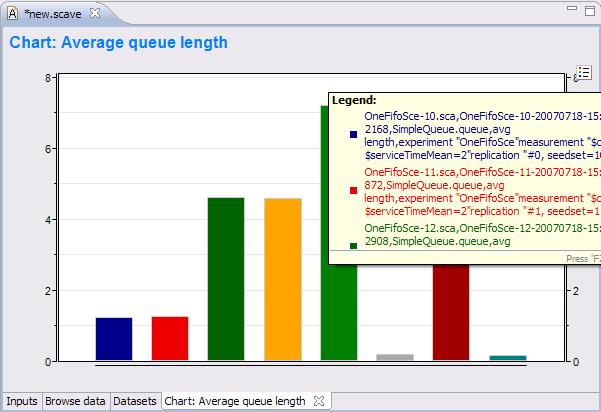
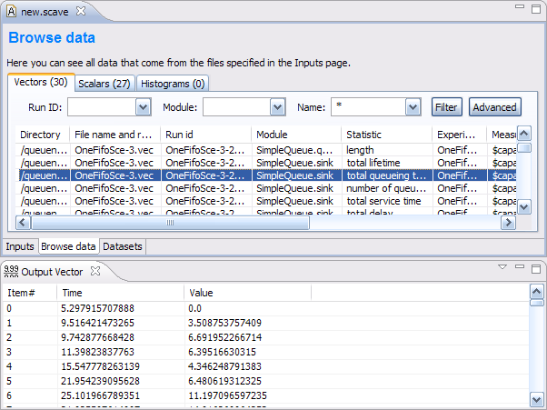

A QUICK OVERVIEW OF THE OMNeT++/OMNEST 4.0 IDE
The OMNeT++ 4.0 Integrated Development Environment is based on the Eclipse platform, and extends it with new editors, views, wizards and other functionality. OMNeT++ adds functionality for creating and configuring models (NED and ini files), performing batch executions and analyzing the simulation results, while Eclipse provides C++ editing, CVS/SVN integration and optionally other features (UML modeling, bugtracker integration, database access, etc) via various open-source and commercial plug-ins.
The following screenshots introduce the main components of the OMNeT++ IDE.
The OMNeT++ 4.0 IDE, editing a NED file
The NED Editor can edit NED files both graphically or in text mode, and the user can switch between the two modes at any time, using the tabs at the bottom of the editor window.

The NED Editor in graphical editing mode
In graphical mode, one can create compound modules, channels, and other component types. Submodules can be created using the palette of available module types. Visual and non-visual properties can be modified in the Properties View, or by dialogs invoked from the context menu. The editor offers unlimited undo/redo, object cloning, constrained move and resize, aligning objects, zooming, and many other possibilities.
Submodules can be pinned (having a fixed position), or unpinned (autolayouted). Graphical features that can be edited include background image, background grid, default icons (via display string inheritance), icon sizing and coloring, transmission range, and many others.

Properties view
The Properties View lets the user edit graphical and non-graphical properties of objects. Special cell editors facilitate selecting colors, icons, etc. Undo and redo is supported for property changes too. The Properties View is also used with other editors like Result Analysis, where the user can customize charts and other objects with it.

The NED Editor in source editing mode
Text mode lets the user work with the NED source directly. When hitting Ctrl+Space, the editor offers context-aware completion of keywords, module type names, parameter, gate and submodule names. Template proposals to insert full compound module skeletons, submodules, various connection structures etc. are also available. Documentation of referenced module types can be viewed by hovering over the NED type name. The NED source is continually parsed and validated as the user is typing, and errors are displayed at real time on the left margin. Syntax highlighting, automatic indentation, and automatic conversion from the OMNeT++ 3.x NED syntax are also provided.

Outline View
The Outline View shows the structure of NED files in both graphical and text editing mode, and allows navigation as well.
Other Views. The Module Hierarchy View and the NED Parameters View can also be used with the NED Editor (they will display the submodule hierarchy and the parameters of the selected module or submodule) – these views will be described with the Ini File Editor. Further related views are the Problems View (which displays errors and warnings in NED files and other files), and Tasks View (which shows a list of all FIXME and TODO comments found in NED files and other source files.)
The Ini File Editor lets the user configure simulation models for execution. It features both form-based and source editing.

Form-based ini file editing
The Ini File editor knows about all supported configuration options and offers them on several forms, organized by topics. Descriptions and default values are displayed in tooltips, which can be made persistent for easier reading. The structure of the ini file (sections and their inheritance tree) is also visualized and editable via drag&drop and dialogs. Validation and content assist (Ctrl+Space) are also provided where needed. The editor supports unlimited undo/redo, and automatic conversion from OMNeT++ 3.x ini files.

The ini file source editor
The text editor lets the user work with the ini file directly, which will be more efficient for advanced users than forms. Unlimited undo/redo, syntax coloring, completion of configuration keys, values and module parameter patterns (on Ctrl+Space) are provided. As the user types, the file is continually being analyzed, and errors/warnings are displayed at real time.
The editor knows about all NED declarations (simple modules, compound modules, channels, etc), and can fully exploit this information for providing diagnostics and assistance to the user. Looking at the network= configuration key, it knows the top-level compound module NED type, and internally builds a static picture of the network by recursively enumerating the top-level module's submodules, sub-submodules, sub-sub-submodules, etc – and continually relates this information to the ini file contents. Thus the editor always knows which ini file keys match which module parameters, which are the ini file keys that are unused (won't match anything), and which module parameters are still open (i.e. have no value assigned yet), and displays this information in tooltips, as warnings, and in various views.

The Add Missing Keys dialog
To speed up the process of creating ini files from scratch, the editor offers an Add Missing Keys dialog. On clicking OK, the editor will insert ini file keys for all open NED parameters, and the user only needs to supply the values.

Module Hierarchy View
The Module Hierarchy View displays the submodule hierarchy of the network of the current configuration, together with the module's parameters. It shows how module parameters obtain their values (from NED, by applying a NED default value, or the from ini file). It is able to resolve simple cases where a submodule type comes from a string parameter (NED's like keyword). By using the context menu, the user can go to the NED declaration of a module, submodule, parameter, gate, or to the place where a parameter gets its value (in NED or in the ini file).
The View can be pinned to a particular editor, to prevent its contents from changing when the user switches across NED and ini file editors.

The NED Parameters View
By default, the NED Parameters View displays the table of all unassigned NED parameters in the network of the current configuration, and it can be switched over to show all parameters, assigned or unassigned. For assigned parameters, it shows how they obtain their values (from NED, by applying a NED default value, or the from ini file), and the user can open the relevant places in the NED files or the ini file. This View can also be pinned.

The Problems View
The Problems View presents errors, warnings and info messages in NED files, ini files and other source files in a unified manner. Double-clicking on an item opens the corresponding file and goes the error's location. The view's contents can be filtered in various ways (current file, current project, all projects, by severity, etc).
Other Views. The Outline View displays the list of sections in the current ini file, and can be used for navigation as well.
The OMNeT++ IDE makes it possible to run simulations directly from the integrated environment. It is possible to run a simulation as a normal C/C++ application and perform C++ source-level debugging on it; to run it as a standalone application (under Tkenv or Cmdenv); or to run batches of simulations where runs differ in module parameter settings or random number seeds. (NOTE: an Eclipse-based runtime environment [“IDEEnv”] does not exist yet, it is planned for future releases.)

The Run dialog showing a simulation launch configuration
In the Eclipse IDE, the various ways of launching a program being developed is described by launch configurations. There are various launch configuration types (C/C++ Application, Java Application, etc). To launch a program for the first time, the user creates an instance of a launch configuration, fills in a form (program name, command-line arguments, etc.), and hits the Run button. OMNeT++ provides launch configuration types for simulations: one extends the normal “C/C++ Local Application” launch type with a Simulation tab (for convenient editing of simulation-related command-line options), and a standalone launch type for launching a simulation or running simulation batches. The former can be used for C++ debugging as well.
The dialog shows a standalone launch type for the QueueNet example simulation model. Batch simulations can be launched by specifying more than one run number in the dialog. Ini files (enhanced in the 4.0 release) allow the user define various scenarios that iterate over a list of values for certain NED parameters, and/or do multiple runs with different seeds; the launch dialog helps the user select the desired run numbers by showing which runs correspond to which parameter and seed settings.
Multi-processor or multi-core computers can be exploited by specifying that more than one process may be launched (i.e. may be running) at a time.

Progress View
The Progress View reports the status of simulation execution when you have a long-running simulation, or you are executing several runs in a batch. It is possible to cancel the whole batch operation with a single click if it is necessary. Simulation runs are running in different processes that do not block the IDE, so the user can keep working while her simulations are running in the background. In the above screenshot, the number of processes to run in parallel was set to 2; run #1 has already terminated (and is no longer shown), and run #3 already got launched while run #2 is still running.

Console View
Each running process sends its output to a separate console buffer within the Console View, so the user can review the output after the simulation(s) have finished. One can switch between console buffers using the Console View's menu or toolbar, or by double-clicking on a process in the Debug View.

The Debug View showing three runs in a simulation batch.
The Debug View is another one of Eclipse's standard Views, but it is not only useful for debugging. While the Progress View only shows currently executing processes, the Debug View displays the ones already terminated as well, together with their exit codes. Processes are marked with the run number and launch time for easier identification. Double-clicking an item reveals the process' output in the Console View.
The OMNeT++ 4.0 simulation kernel is capable of logging various events during simulation: scheduling and canceling self-messages, sending messages, display changes, module and connection creation and deletion, user log messages, etc. The result is an event log file which contains detailed information of the simulation, and later can be used for various purposes, such as visualizing message exchange among modules on a sequence chart. The file format is line-based text to facilitate processing by third party tools.

A Sequence Chart showing ARP on a wireless network
An event log can be visualized with the Sequence Chart in the IDE. On the Sequence Chart, events are represented with nodes, and message send/schedule/reuse operations with arrows. The chart can be filtered by modules, message types, and various other criteria. The chart can also be filtered to the causes/consequences of a particular event (this works by following message arrows backward and forward in simulation time). The chart timeline can be displayed in various modes, such as linear (simulation time), compact (non-linear), and event number-based. Sorting of module axes, displaying state vector data on axes (using output vector files), zooming, and special navigation options (bookmarks, zoom to message send, follow message send), and exporting the chart in SVG format.
Both the Event Log Table and the Sequence Chart are capable of efficiently displaying event log files of several gigabytes without requiring large amounts of memory.

The Event Log View
The Event Log Table displays the content of an event log file recorded during a simulation. It supports raw and descriptive notations, line based filtering for event log entry types and various parameters, search for free text, bookmarks and special navigation options such as go to simulation time or message arrival. The Event Log Table supports the same filtering as the Sequence Chart.
Scave is the result analysis tool of OMNeT++, and its task is to help the user process and visualize simulation results saved into vector and scalar files. Scave is designed so that the user can work equally well on the output of a single simulation run (one or two files) and the result of simulation batches (which may be several hundred files, possibly in multiple directories). Ad-hoc browsing of the data is supported just as well as systematic and repeatable processing. The latter means that all processing and charts are stored as “recipes”; for example, if simulations need to be re-run due to a model bug or misconfiguration, existing charts need not be drawn all over again, but simply replacing the old result files with the new ones will result in the charts being automatically displayed with the new data.
Scave is implemented as a multi-page editor. What the editor edits is the “recipe”: what result files to take as inputs, what data to select from them, what (optional) processing to apply, and what kind of charts to create from them. The pages (tabs) of the editor roughly correspond to these steps. You will see that Scave is much more than just a union of the OMNeT++ 3.x Scalars and Plove tools.

Specifying input files for data analysis
The first page displays the result files that serve as input to the analysis. The upper half specifies what files to select, by explicit filenames or by wildcards. The lower half shows what files actually matched the input specification, and what runs they contain. Note that OMNeT++ 4.0 result files contain a unique run ID and several metadata annotations in addition to the actual recorded data. The third tree organizes simulation runs runs according to their experiment—measurement—replication labels.
The underlying assumption is that users will organize their simulation-based research into various “experiments”. An experiment will consist of several “measurements”, which are typically (but not necessarily) simulations done with the same model but with different parameter settings; that is, the user will explore the parameter space with several simulation runs. And, to gain statistical confidence in the results, each measurement will be possibly repeated several times, with different random number seeds. It is easy to set up such scenarios with the improved ini files of OMNeT++ 4.0, and then the experiment-measurement-replication labels will be assigned more-or-less automatically – please refer to the Inifile document (“Configuring Simulations in OMNeT++ 4.0”) for more discussion.

Browsing vector and scalar data generated by the simulation
The second page displays results (vectors, scalars and histograms) from all files in tables, and lets the user browse them. Results can be sorted and filtered. Simple filtering is possible with combo boxes, or when that's not enough, the user can write arbitrarily complex filters using a generic pattern matching expression language. Selected or filtered data can be immediately plotted, or remembered in named datasets for further processing.

Defining datasets to be analyzed
The Datasets page ...

A Line Chart

A Bar Chart

Output Vector View

Dataset View